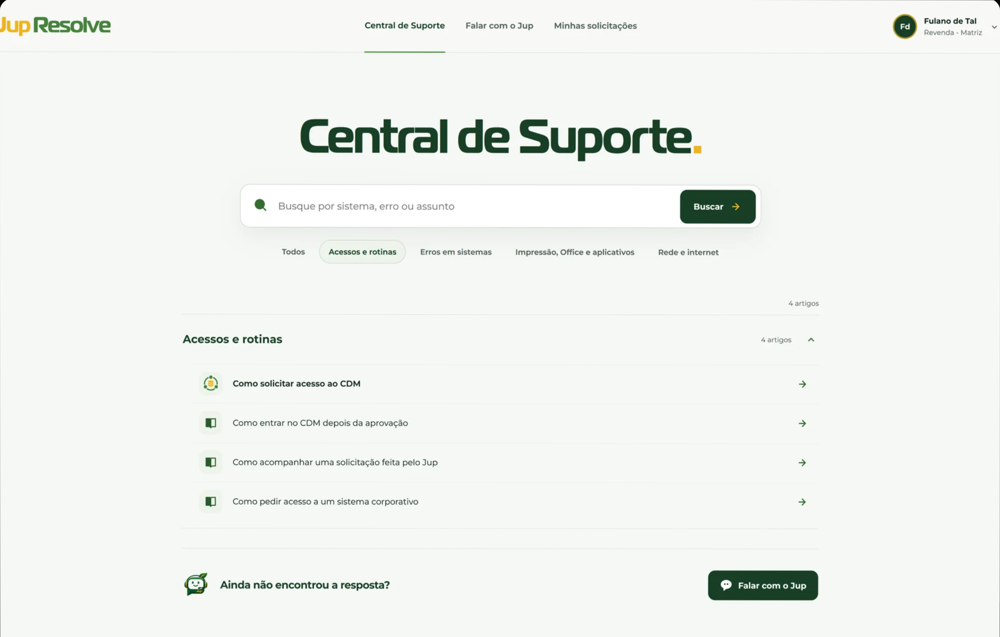

Como encontro a pasta do Financeiro?
Jup Resolve
Entender primeiro.
Agir quando necessário.
Jup


Por que toda necessidade de TI precisa começar abrindo um chamado?
Chamado é um destino. Não o ponto de partida.
O que chega ao suporte
Preciso que liberem meu acesso à pasta do Financeiro.
A pasta do Financeiro parou de abrir.
entender
antes de decidir
Dúvida
Permissão
Problema
O Jup entra dentro do fluxo.
Conversa natural, contexto preservado, decisão controlada.
mesma conversa, mesmo contexto
A jornada começa pela Central de Suporte.

IA entende e conversa. Backend decide e executa.
Qwen3.5 4B
entende
BACKEND
decide
Qwen3.5 4B
conversa
Identidade
Knowledge aprovada
Playbooks
Políticas
Integrações
Ver arquitetura completa